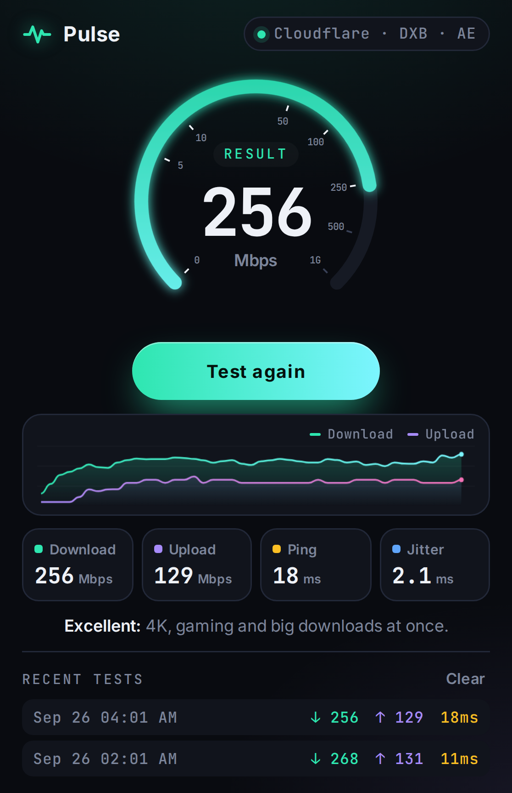

Free internet speed test in your Chrome toolbar
Pulse Internet Speed Test is a free Chrome extension that measures your download speed, upload speed, ping and jitter in about 20 seconds, without opening a new tab.
Add to Chrome, it's freeNo ads · No account · Works in Chrome, Edge and Brave

What does Pulse measure?
Pulse measures the four numbers that decide how fast your internet feels: download speed, upload speed, ping and jitter. Each result is shown on a live gauge and graph while the test runs.
Download speed, in Mbps, is how fast data reaches your device. It affects streaming, downloads and page loads.
Upload speed, in Mbps, is how fast data leaves your device. It affects video calls, file sharing and cloud backups.
Ping, in milliseconds, is how quickly your connection responds. Lower ping means less lag in games and calls.
Jitter, in milliseconds, is how much your ping changes. Low jitter means stable, smooth calls and games.
How does Pulse test internet speed?
Pulse tests internet speed by sending and receiving data through Cloudflare's public speed-test service, which automatically picks the nearest of Cloudflare's 330+ city locations. A full test takes about 20 seconds and follows three steps:
- Ping and jitter (about 1 second): Pulse times 12 small requests, reports the median as ping and the average change between requests as jitter.
- Download (9 seconds): Pulse downloads test data over 5 parallel connections.
- Upload (9 seconds): Pulse uploads random test data over 3 parallel connections.
Pulse ignores the first 30% of each download and upload phase, while the connection is still ramping up, so the final number reflects your sustained speed rather than the slow start.
What is a good internet speed?
A good internet speed for most homes is 25 Mbps download or more with ping under 80 ms, which supports 4K streaming and HD video calls. Pulse uses these bands to give every result a plain-English verdict:
| Download speed | Rating | Good for |
|---|---|---|
| 100+ Mbps (ping under 40 ms) | Excellent | 4K streaming, large downloads and gaming at the same time |
| 25–100 Mbps | Great | 4K video, fast video calls, online gaming |
| 10–25 Mbps | Good | HD streaming and video calls |
| 3–10 Mbps | Fair | Browsing and standard-definition video |
| Under 3 Mbps | Slow | Basic browsing only |
Frequently asked questions
How long does a Pulse speed test take?
A Pulse speed test takes about 20 seconds: about 1 second for ping, 9 seconds for download and 9 seconds for upload.
Is Pulse Internet Speed Test free?
Yes. Pulse Internet Speed Test is completely free, has no ads and does not require an account.
Why is my WiFi speed lower than my internet plan?
WiFi speed is usually lower than the speed of your internet plan because of distance from the router, walls, other devices on the network and the 2.4 GHz band. Run Pulse next to your router and then in another room to see how much speed your WiFi loses.
Does Pulse collect my data?
No. Pulse does not collect, sell or share personal data. Your test results are stored only in your own browser. Read the privacy policy.
Which browsers does Pulse work in?
Pulse works in Google Chrome and other Chromium browsers that install extensions from the Chrome Web Store, including Microsoft Edge and Brave.